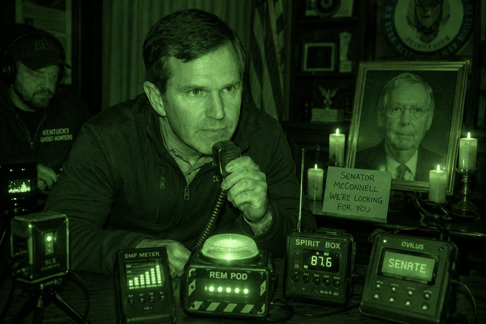

Town Hall Dispatches
Governor Andy Beshear Hires Paranormal Investigators in Search for Mitch McConnell
Forty-four days into Senator McConnell's disappearance, Governor Beshear brought in the Kentucky Ghost Hunters and a spirit box to settle the matter once and for all.

IT has now been forty-four days since Senator Mitch McConnell went missing.
The official narrative is that McConnell is resting at an undisclosed location somewhere in Washington, D.C., rehabilitating from a fall he suffered in mid-June.
However, aside from one photograph his office released of the senator seated beside his wife, no one has actually seen McConnell in person, leading to mass confusion and growing speculation about the senator's condition.
Some folks believe McConnell was kidnapped by a group of radical extremists demanding term limits. Others believe McConnell may no longer be among the living at all.
Enter Governor Andy Beshear.
Beshear has decided enough is enough and has dedicated his time this week to finding the missing senator.
The governor has sent multiple requests to McConnell's team asking for information about his whereabouts but had not received a response as of press time.
“All we can do is assume the worst,” Beshear said Tuesday.
“That's why the buck stops here, and we're going to get to the bottom of it. I have hired a team of paranormal investigators to settle this matter once and for all. If Mitch is still here with us, we need to know about it.”
The paranormal investigation team, known as “The Kentucky Ghost Hunters,” set up a whole array of equipment including a spirit box, EMF meters, thermal cameras, and EVP recorders on the sidewalk outside McConnell's Washington office, having been denied entry, in hopes of reaching the possibly deceased senator from the other side.
The Observer was granted exclusive access to the investigation, which the governor's office described as a matter of public transparency.
“Mitch, are you here with us right now?” one investigator asked while speaking into an electronic cube covered in flashing lights.
“Senator McConnell … please make yourself known to us if you can hear us.”
No response.
After several more unsuccessful attempts, Beshear decided to give it a try himself.
“Senator McConnell, if you are out there somewhere, we need you to come home. We hope you know that whatever is wrong, it will be okay. We will get through this together, no matter the cost. We are all Kentuckians, and together we are a strong and proud people. We are resilient, and we are all part of Team Kentucky and there is nothing that we cannot do together and that's why I'm proud to announce my candidacy for Pr—”
“Uhm, Governor,” a Team Kentucky staffer interrupted. “Can we stay on topic, please?”
“Oh, right. Sorry,” Beshear said.
“As I was saying, we need to know that you're alive, Mitch. Please let us know if you're out there.”
Nothing.
Beshear tried again.
“Mitch, if you can hear me, give us a sign.”
Suddenly, the electronic cube lit up.
Everyone on the sidewalk froze.
“Holy— ” one investigator whispered.
Beshear leaned toward the device.
“Mitch?”
The lights flashed again.
“Mitch, is that you?”
Another flash.
Investigators quickly brought out additional equipment and began asking questions.
“Senator McConnell, are you dead?”
Nothing.
“Why did you try to take away my health insurance?”
Nothing.
“Do you know what you've done to your legacy by supporting such a corrupt administration?”
Nothing.
“Mitch, why are you hiding?”
Nothing.
After nearly twenty minutes without another response, investigators began packing up their equipment.
Then, as the team prepared to leave, an Observer reporter shouted one final question.
“Senator McConnell, do you support Andy Beshear for president?”
Every device on the sidewalk immediately began flashing and beeping uncontrollably.
One piece of equipment almost vibrated off the sidewalk before it spelled out a single word:
“NO.”— THE OVILUS, SIDEWALK OUTSIDE McCONNELL'S WASHINGTON OFFICE
Beshear stared at the machine for several seconds.
“Well,” he said. “At least we know he's still Mitch.”
McConnell's office did not respond to The Observer's request for comment on whether the senator is alive, dead, missing, recovering, communicating through electronic devices, or simply ignoring everyone. The Kentucky Ghost Hunters said the investigation remains open.
Letters to the Editor
Speak now, or forever hold your suspicions.
Continue Monitoring

Richmond City Commission Meeting Erupts Into Full-Blown Wrestling Match
One man was fired without a reason, one was un-fired without an apology, and the meeting went so far off-script even the referee stopped enforcing rules.

Madison County Airport Closed for Foreseeable Future Due to Ongoing Amy McGrath Campaign Filming
Three jets, seventeen landings, and one very determined soccer mom in aviators have grounded the county's only runway indefinitely.

Berea Police Department Phases Out Neighborhood Grandmothers in Favor of AI-Powered Flock Cameras
A $340,000 camera network is taking over for the porch-watch grandmothers — and getting outperformed by a possum named Chester.